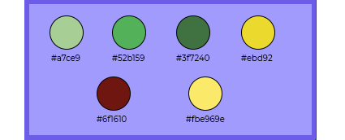

CROMÁTICA

COLORES
Principalmente utilicé colores en la gama del verde ya que son los colores simbólicos del personaje Cosmo.
También utilicé el amarillo para que resalten los títulos/recuadros. Por último usé el bordótanto para la cabecera como para el footer de la página.